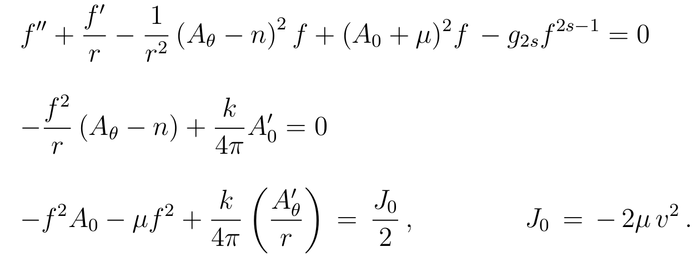

This repository contains the code used for the numerical analysis performed in arXiv.1912.11321.
The numerics was performed by computing solutions of the system of linear equations in MATLAB.

These solutions are then used to calculate the various properties these solutions have (e.g. total energy, radius, total flux, peak value of B, etc)
I have only run this on a Unix like environment so if you attempt to run this on Windows it might not work since the path declaration is not consistent with Windows standard. I can, of course, fix this, upon request.
When in MATLAB, go to the matlab directory and run
dimensionless (or dimensionless_Sixth_order.m if you would like to solve the equations with a 6th order monomial)
This will produce a plot of the vortex profiles and write down their respective characteristics on a file called data/Dimensionless_Data.txt (or data/Dimensionless_6thorder_Data.txt in the 6th order monomial case)
The characteristics are recorded to 5 decimal points on a separate line for each run in the following order:
| 1 | 2 | 3 | 4 | 5 | 6 | 7 | 8 |
|---|---|---|---|---|---|---|---|
| n | alpha | totalflux | totalenergy | radius | A0max | maxBfield | residue |
In addition, the data for each profile is recorded in a file named data/solutions/dimensionless_solution_nVALUEOFn_alphaVALUEOFalpha.csv. The entries in those files are as follows:
| 1 | 2 | 3 | 4 | 5 | 6 | 7 |
|---|---|---|---|---|---|---|
| Radial Position | Magnetic Field | Scalar Field | Electric Potential | Magnetic Potential | Electric Field | Energy Density |
One can adjust the parameters from the relevant section in the matlab/dimensionless.m file.
% Parameter declaration:
%----------------------------------------
global n;
global alpha;
global zero;
n=-20; % Set flux number.
alpha=4; % Set dimensionless coupling.
zero=0.01; % Low cutoff point for the bvp solver.
infty=22; % High cutoff point for the bvp solver.
%----------------------------------------Creating plot image files is done in python. In order to turn these data files into plots, first add the solution you would like to plot at the start of the solution_plot_dimensionless.py file as follows
your_data = np.genfromtxt('data/solutions/dimensionless_solution_nVALUEOFn_alphaVALUEOFalpha.csv', delimiter=',', names=['x', 'B', 'f', 'A0', 'Atheta','A0`', 'energy'])If, for example, you'd like to plot the magnetic field for your choice of parameters, simply amend the relevant section along with title, legend and filename:
# Plot B:
# {{{
#----------------------------------------
ax=plt.gca()
plt.title('Magnetic Field Profiles for n=-1', FontSize=25)
plt.plot(data_n_1_param1['x'], data_n_1_param1['B'], '-',LineWidth=1.6,c='b')
plt.plot(data_n_1_param2['x'], data_n_1_param2['B'], '--',LineWidth=1.6,c='r')
plt.plot(data_n_1_param3['x'], data_n_1_param3['B'], '-',LineWidth=1.6,c='g')
plt.plot(data_n_1_param4['x'], data_n_1_param4['B'], '-',LineWidth=1.6,c='m')
plt.plot(data_n_1_param5['x'], data_n_1_param5['B'], '-',LineWidth=1.6,c='tab:orange')
plt.plot(your_data['x'], your_data['B'], '-',LineWidth=1.6,c='tab:cyan')
plt.xlabel(r'$\hat{r}$',FontSize=20)
plt.ylabel(r'$\hat{B}(\hat{r})$',FontSize=20)
ax.set_ylim(bottom=-1.02)
ax.set_xlim(left=0,right=30)
ax.legend((r'$\alpha =1$', r'$\alpha =2$',r'$\alpha =3$',r'$\alpha =4$',r'$\alpha =5$'))
plt.tight_layout()
plt.savefig('python-plots/solution_plots/solution_dimensionless_nVALUEOFn_Bvsalpha')
plt.clf()
#----------------------------------------
# }}}The plots for the various characteristics are produced in a similar way, again in python. You can either use the data from data/Dimensionless_Data.txt (or data/Dimensionless_6thorder_Data.txt) or you can copy specific lines from that file, that correspond to solutions you have double checked, into a separate file. Then again you include the data in the alphapythonplot.py file as follows:
your_characteristic_data = np.genfromtxt('data/your_data_file.txt', delimiter=' ', names=['n', 'alpha', 'flux', 'energy', 'radius', 'A0', 'peakB', 'residue'])And from here on, it's up to you how you will use that data. I hope this is useful!